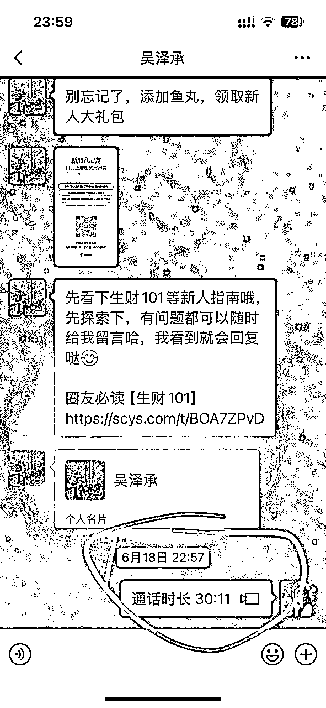
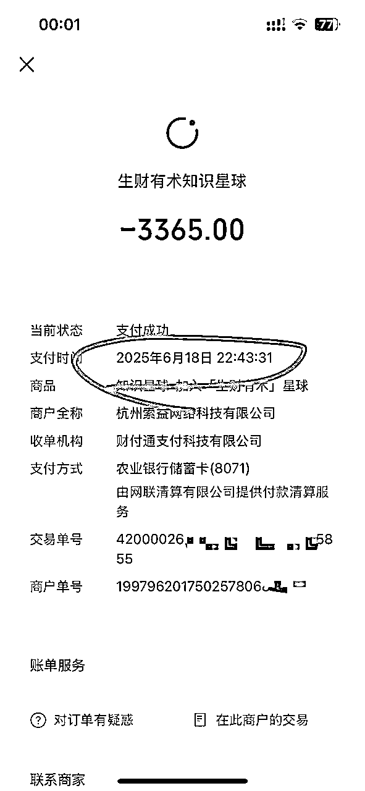

来源：https://gvnaena9t3p.feishu.cn/docx/LMpqdtJF6oFTEVxuyZmcClbRngg
过去十年，我花费大概 30 万+，陆续加入过大大小小的社群。
这些钱对我来说并不算小数目，因为我一直是个小生意人，这十年大部分时间还在上学。很多人可能会觉得这是“乱花钱”，但对我而言，学习和认知的提升一直是我愿意投入的。
然而，这十年下来，我的感受是：
有的社群主打线下聚会，结果一年只参加 2~3 次，带来的价值有限。
有的社群零零散散，内容很多，但对我的生意帮助不大。
确实有认知上的提升，但投入与产出比，并没有让我特别满意。
直到两个月前，我加入了 生财有术。
为什么我愿意单独写一篇文章，分享我的收获？原因只有一个：这是一个让我觉得“钱花的最值，最适合我的”的社群。
我喜欢它的三个地方：
我几乎能随时搜到我想要的任何内容。不论是副业、0~1 项目，还是成熟的 SOP，都有人分享。
2. 碎片化，但能组合成系统
信息看似零散，但结合我的知识框架，我能把这些碎片重新组装，形成可操作的流程，当然啦，我也很擅长很喜欢做这个事情。
3. 适合我这样的“内向创业者”
我不是很喜欢到处社交。在别的社群，不去线下就几乎没收获，而在生财，我在社群里就能随时找到我需要的思路和答案。
结论是：
花了 30 几万学费后，我终于遇到一个最适合我的社群。
所以我想认真写下这篇文章，用两个月的实践，告诉新人：
加入生财两个月，我到底收获了什么？你能通过看到我的分享学到什么？
大家好，我是晴子。感谢七天老师的邀请。
这篇新人复盘帖拖延了挺久，其实前几天我晚上心血来潮写了一篇一万字的新人怎么用好生财有术的内容，但是我又想到，其实我也是一个新人，所以之前写的那篇就跑偏了。
那篇内容更接近于新人怎么挖掘优势，怎么找到适合自己，属于自己长期主义的产品，怎么做21天的养成习惯计划，怎么利用这个生财有术的信息差等等吧。
以后我在仔细思考思考这个内容，打磨打磨，时机到了的时候在发出来和大家一起学习。
8 月 16日晚上9点半到家后，我开始静下心来写下这篇1.3w字的内容。
先给大家讲一下我是怎么写的？
我是用语音转文字的方式，我把我想说的话，用语音表述出来，因为打字很慢，然后我录了一个30多分钟的音频，在转文字，一个小技巧哈。
为什么选在今天呢？因为下午参加了戴哥的组局，晚上又和 4 位圈友一起吃饭，在交流中，我也感受到了大家的真实状态，也更坚定地想要记录下自己这两个月的复盘。希望能把我的收获和思考分享出来，也能给刚加入的新人一些参考。
这是我第一篇帖子的链接：https://scys.com/articleDetail/xq_topic/5125812545148544电商卖货保姆级实战手册(个人玩法/团队玩法0-1/1-10必看)
以下是我的个人介绍，方便让不认识我的圈友了解我。
我出生于1997年，今年28岁，有13年的赚钱经验，公众号：晴子bosss
我的盖洛普前5的标签是：分析、战略、理念、排难和行动。
用一句话形容我：我是一位战略型实干家，我擅长分析商业本质，能够迅速在市场中找到赚钱机会，并马上执行落地拿到结果，然后提炼可复制的方法带人赚钱，让大家少走弯路。
我的商业轨迹
2012 年（上初中）：在贴吧卖手机流量卡，赚到人生第一桶金，同时见证了从 2g,3g,3g+,4g的互联网发展。
2013 年：接触淘宝 shua 单，从一个普通会员做到主持，再到自己开团招募主持和会员，团队规模 20 位主持、数百会员。
2014–2016 年：做微商，卖美甲贴纸，开始积累微信私域客户，为后续创业打下坚实基础。
2016 年底：因为早期就有付费学习的意识，接触到了穿戴美甲赛道。
2017 年：快手、抖音短视频引流，私域加满 10 多个微信号，作为万人团队操盘手，带上千名直属代理赚钱，我的努力也实现了家庭的财富跃迁。
2018 年：快手直播单月纯利润 50 万+；抖音直播单日纯利润 10 万+，且持续一段时间，现在直播也一直在做哈。
2019–2020 年：留学期间接触外贸与跨境出口，做 TikTok 海外账号，单日涨粉 1 万，一个月累积 18 万粉丝。
2021 年-2022年底：疫情期间投资 70 万开穿戴甲工厂，面对封控风险，后开放后果断分流业务最后清仓全身而退。
2023 年：接手实体门店，次月迅速转让亏损5w，让我更加坚定了走轻资产模式的决心。
2018 至今：投资外包客服团队，为各类电商平台商家提供服务，保持长期稳定盈利。有电商外包客服需求的圈友可以找鱼丸联系我。
2025 年：除本行业外，今年8月开始布局个人ip以及疗愈相关赛道，探索新的长期增长机会。
以上是我的个人介绍，我没有什么拍照习惯，就找了一些自己在QQ和微信朋友圈的痕迹。
下面是非常深度的正文，希望我的这些成长也能给一部分认可我想法的人提供一些力所能及的方向和帮助。
我接触生财有术这个平台，还挺有故事的。最早是2023年10月29号，一个深圳叫豆芽的女生给我讲的。我有截图哈
但是在网上搜了搜，我觉得我看不懂这个社群。
后来是2024年，不知道是什么时候领取的三天体验卡，但我还是没付费。 那三天，我好像也没学习。
但是我在这三天，我在生财有术搜到了北京本地群，我忘了是添加的谁的微信，我就被拉到群里了。 进群也是潜水，从不讲话。
——这是我和生财有术的两次“擦肩而过”。
今年5月之后，我一直在找北京的办公场地，但是都没特别合适的。
后来我在北京群里看到戴哥发共享办公的组局，我第一次看到消息的时候，因为我没付费，所以我不敢说话。但我看了两位老板的头像，王子冯老师就是那种气场强的，戴哥的头像就是大佬投资人的那种感觉，因为是筛选制，所以我觉得我选不上。
第二次看到戴哥在群里发，我鼓起勇气加微信。6月18号，有图哈哈哈哈
然后我6月18号晚上就付费了，对，我没好意思问戴哥的推荐码，因为戴哥的title很厉害，我怕我不是生财的用户，被踢出群😂。
后来就在吴泽承学长的推荐下付费了。一切都是命运的安排。
提一嘴：学长真的很厉害，而且他很拼，那天他说去做义工才回来，到家就给我打电话，他还给我开视频看他怎么做小红书获客的，其实我把我想了解的都知道了，我早就想挂电话了，但是他还在讲，我就没好意思打断他，最后我说我要睡觉了就挂了哈哈哈哈哈哈！！！！


6月19号去参加组局了，这是我们的照片，很有纪念意义，保护其他成员隐私，换了个Ai卡通照片。
因为我平时一直是居家办公，很少出去，接触的人都是互联网的网友们，我的客户也是网友，所以我不太喜欢出去应酬社交。
线下局大家聊的很愉快，我说到我的经历的时候，大家都夸我😂 其实我一直都觉得我没有那么厉害，我不自卑。但我没有那么自信。
因为这个位置离我还是有点距离的，通勤一个半小时，一天3h，当时是想思考思考的。后来一起参加聚会的小伙伴，大家都入驻了，就差我了，我也拿不准呀，但我潜意识就认为，我不加入会后悔，这一定是我未来事业的转折点。 所以第二天，我和王子冯老师说，我坚持一个月看看，姐说，好。欢迎我的加入。
对，我坚持住了哦，目前快进入第三个月续费了。
我平时下班是骑共享单车回家，半路上听杨涛老师的播客，所以一点不寂寞，而且我也把我的时间吃掉了，我的单程是20km。坚持运动呀圈友们。
当时的我，其实正处在一种很纠结的状态。
一方面，我从 5月份开始就一直在找一个适合的办公环境。每天在家里待着，说实话，效率真的很低。尤其是做自由职业，没有人监督，就特别容易松懈。
那种状态让我觉得在虚度光阴，我一直在等一个机会，等一个转机，如果机会来了，我一定毫不犹豫的抓住它。
这个也特别提一句：我认为机会和转机不是蓄谋已久的，而是突然来的。包括风口，赚钱的方向都是如此，这是我的感触哈，所以我每次都能抓住机会。
第一次看到戴哥发组局信息，但是因为我还没加入生财有术，就没办法报名参加。那种“想去又去不了”的遗憾，一直留在我心里。
所以这次，我参加了组局，我觉得大家都好厉害，虽然我的通勤有点久，但我也不能错过这次机会，因为，我觉得一旦错过了，我就一直呆在自己的舒适区不能成长。
然后，我已经坚持两个月了，现在马上要进入第三个月了。
我还会继续待下去，直到我需要创建属于自己的团队，再去换到一个新的环境。
那我在共享办公时，最大的收获是什么呢？
我没有上过班，而且自己每天有效工作时间只有2- 3 小时。 一周下来，实际推进的工作不足 40%
所以我不知道上班族的那种“规矩感”是怎么建立起来的。
比如，为什么要每天早起？为什么要打卡？为什么一定要在某个时间点坐在工位上？
但是，当我进入共享办公环境以后，我第一次体会到了那种规律感。每天早上起床、整理、出发，按时到达工位，然后开始工作。这样循环几天之后，我突然发现自己整个人都被“调整”过来了。
对我来说，这是第一个巨大的变化。因为工作效率提高到了每天4-5小时，实际推进的工作达到了80%
这点听上去有点奇怪，但其实很真实。
在家办公的时候，你可以找各种借口拖延，没人管你。但在共享办公环境里，你身边全是埋头做事的人，你要是一直玩手机，就会特别不好意思。于是，你只能强迫自己进入状态，开始干活。
久而久之，这种“被动逼迫感”反而成了我每天保持效率的助力。
这也是我为什么后来越来越喜欢去的原因。
我以前是一个很宅的人，不太喜欢社交。但在共享办公的环境里，大家每天见面，聊天、讨论项目，自然而然就建立了连接。
比如，我和“王子冯老师”成了经常一起吃饭的伙伴。我经常骑着她的电动车带她去食堂，我记得最深的一句话就是：“不是每一份钱都要赚，还要筛选客户”这句话对我影响特别大。
以前的我，总觉得有钱就应该接，客户来就应该答应。但她告诉我：其实你要学会筛选客户，学会拒绝。因为真正有价值的客户，往往不是数量上的堆积，而是质量上的筛选。
加入生财有术23天，写了第一篇内容
说实话，我最开始加入的时候，完全没想过自己会写帖子。
我一直觉得，写帖子是“高手们”的事，轮不到我。我顶多就是在群里冒泡，跟大家随便聊几句。但没想到，事情的发展完全超出了我的预期。
事情是这样的：我加入生财有术大概 20 多天的时候，因为我的伙伴，她是小红书大佬，收入也特别高，她居然问我后端问题，所以我临时起意，写了这篇内容，希望能帮助一些人。
这是我第一篇帖子的链接：https://scys.com/articleDetail/xq_topic/5125812545148544电商卖货保姆级实战手册(个人玩法/团队玩法0-1/1-10必看)
我写得特别随意，没有套用什么高大上的框架，就是想到哪儿写到哪儿，我还担心会不会发出去没人看阿。
结果让我震惊了，没多久，帖子就被加精华了
后来还被亦仁老大加了“超级术”的标签，推送给了全圈阅读，还收到了666.66元的奖金，真的感觉自己被“看到”。
我一直觉得自己只是一个新人，没什么特别的亮点。结果没想到，我用最普通的语言、最真实的经历，反而让那么多人看到了价值。
我才第一次意识到：
原来写帖子，不需要你有多么了不起的成果
也不需要你用多么高深的词汇。
只要你写的是真实的，能让人产生共鸣，它就是有价值的。
那一刻，我心里特别感慨。因为这意味着，我已经从一个单纯的“读者”，变成了一个“贡献者”。
这件事，也彻底改变了我的心态。我从“不敢写”到“想写更多”。
因为我知道，哪怕我写的只是一些普通的心得，也可能会成为别人的启发，就可能会帮助到别人。
所以看到这里的你，可以做点什么呢？
加入 2 个月，我参加了7次组局，认识了一百多位圈友，其中有20+圈友和我深度聊过，并且我也给了力所能及的副业赚钱建议。
我真正觉得自己开始“进入状态”，是从参加很多线下聚会开始的。
戴哥每周六都会组织一次副业卡点问题局，我在的时候就会参与一下，然后戴哥每次都夸我😂真的是自家的孩子使劲夸。
我发现大家都在聊自己在做什么副业，遇到过什么坑，想要尝试什么方向，这些问题我也曾经遇到过，所以我也能给到一些建议。
而戴哥就是一个超级大脑，我还问过王子冯老师，我说戴哥是怎么做到在复盘的时候记忆每个人的问题，然后又给出那么多建议的，真的太厉害了。
后来我被王子冯老师鼓励也开始组局，再加上我参加其他人的组局，比如吴熳老师，她就是实操课，所以我有时间就会报名，她课的交付很好。
这里的“认识”不是简单的加微信，而是我们真的聊过，甚至一起吃过饭、一起探讨过项目的。
慢慢地，我的心态发生了变化。
人挪活，树挪死，这句话没有一点毛病，在外发展的人也很少有灰头土脸回来的，至少我们在生财有术这个社群，这里有大量的信息，你的认知已经被影响了，折腾折腾可能就有机会呢，这个还是根据自己的情况来哈，也别瞎折腾。
你身处的环境，会决定你的思维方式，人是环境的产物。
多走动就可能遇到属于自己的机遇
因为我的事业还算稳定的，所以我出来办公唯一的目的就是学习Ai，然后这里的伙伴们开始有打算一起合作，然后戴哥过来提意见，我们6个人第一次有了项目的会议，每个人都会提出意见，补充自己的观点，我们不是随便聊天，而是和几位“智囊团”一起头脑风暴。
有图哦，很多美好瞬间我都做了记录。
当你愿意走出去的时候，机会和灵感也会跟着涌进来。
大家的相同点就是: 每个人都在认真地折腾，都在想办法突破自己的瓶颈。
这个道理就是: 你身处的环境，会决定你的思维方式，人是环境的产物。
以前我在家办公时，经常会陷入拖延，做着做着就去刷手机。但在这里，大家都在努力工作，你也会不好意思偷懒。
我们每个人有项目的时候，都会大家坐一起聊聊，两位老板们提出主要意见。我的疗愈相关项目，也是做了2次演讲改动才通过的。
更重要的是，你会不断接收到新的信息。慢慢地，我的心态发生了转变。
从孤军奋战变成和一群人并肩前行
从遇到问题就卡住，变成遇到问题立刻有人帮你解开。
从怕麻烦别人，变成分享自己的收获，反而能获得更多的连接。
认知升级：赚钱不在强依赖靠人和时间，而是可以学会使用 工具 + 外包/兼职 + AI 来放大结果
在加入生财有术之前，我对钱和副业的理解，不是那么全面。
在我过去的认知里，钱 = 靠人 + 靠时间 赚钱需要靠劳动力所得，虽然看起来也没什么毛病对吧。
比如一个员工每天能帮我剪 10 个视频，那我就需要更多员工，才能产出更多内容。
但是，加入生财之后，我逐渐看到了另一种思维方式：钱，不是一定要靠劳动力来赚。
同样的人力支出 → 更高效产出
现在通过流程优化 + SOP，他能做到 15 个视频/天，效率提升了 50%。
全职：每月 6000 元，产出固定
兼职：按量结算，每条视频 10-20 元，灵活支出，反而能省下 30-50% 固定成本。
以前：人工剪辑 1 条视频 = 1 小时；
现在：AI 批量生成，2 小时能产出 30 条初稿，只需人工二次优化。
在举个例子，我认识的一个朋友，他专门做“自动化内容矩阵”。每天不用自己写内容，靠 AI 工具和流程自动生成，再通过工具同步到多个平台。这样，他一个人就能运营几十上百个账号。
以前我觉得“不可能”，但看着他的后台数据，我才意识到：
这就是“系统/Ai工具替你赚钱”的真实案例。
这个案例让我重新思考：副业的核心不是拼体力，而是找到一个可以长期复利的模式。
同样是 100 万：有人是熬夜拼出来的，一旦停下就归零，有人则是靠系统、资产、作品赚的，就算休假，钱也在进来。
加入生财后，我开始更注重后者。
我开始研究：哪些副业能低成本启动、又能长期复利？
我开始思考：我做的每一件事，能不能沉淀成资产，而不是一次性消耗？
这就是我最大的心态变化。
每个人加入生财，都会经历几个第一次。
我觉得这些第一次就像是一个个小里程碑。
虽然看似普通，但回过头来看，它们往往决定了你能不能真正留下来，能不能真正融入圈子。
我也有好几个特别印象深刻的第一次。
刚进圈的时候，我天天在群里看戴哥给我们分享精华帖子，那些帖子动不动就几千字，案例一个比一个精彩。
说实话，我当时的心态是：我又没什么成果，感觉没啥可写的。
后来大家都鼓励我写内容，就有了我的第一篇超级术精华贴。
我才意识到：新人发帖，不是比谁结果大，而是比谁真诚、毕竟世界就是一个巨大的草台班子，毕竟信息差无处不在，你写的内容，不是让所有人都满意，而是去帮助那些认可你的人。
这次第一次发帖，让我明白了：
不要怕自己没成果，你的思考过程、你的观察、你的反思，同样能帮助别人。
而且，你一旦发出来，就会遇见同频的人。
我其实是个比较慢热的人，不太习惯在人群里主动表达，但是多参加了几次聚会之后，大家都很熟了，而是还有朋友主动和我说，后面需要帮忙可以联系他。 所以你敢迈出一步，资源和机会就会自己跑过来找你。
发帖被推荐，是我加入生财后最开心的时刻之一。
因为这不仅是对我内容的认可，更像是一个信号：我是被看到的，我分享的内容是有价值的。
这让我第一次感受到 影响力。原来，普通人也可以通过分享，把自己的思考传递给更多人，并因此获得新的连接。
这份被认可的感觉，让我有了更强的动力，所以我又勇敢的写了这篇复盘帖子。
我也鼓励大家写内容，勇于分享自己的感受。
因为帖子被推荐，所以我参加线下聚会，都有人主动与我链接问我问题。
我意识到：你不用等自己有成绩/成就再去分享。你的分享真的可能让这些人少踩坑。
这些第一次，加起来，就是我在生财有术里真正扎根的过程。
如果你是新人，我想说：
不要害怕。
哪怕只是写下一点点思考，哪怕只是去参加一次聚会，哪怕只是回答一个别人的问题——
它们都可能会成为你未来的某个转折点，没有白走的路。
加入生财有术之后，我很快意识到一件事：这里不仅有机会，也很容易迷失方向。
如果不提前意识到，就很容易浪费时间，走很多的弯路，所以我想把我对生财的使用理解分享出来，希望大家少走弯路。
很多新人进来之后，天天刷帖子，收藏了几十上百篇，甚至建了一个“生财资料夹”。但就是不动手。
我的建议：我的做事方式和建议是：你先找到一个自己的方向去做，先按照航海手册跑个流程0-1，第二步在完善细节。
不要等到“准备好了”再行动，因为你永远不会完全准备好。
生财里每天都有新风口，每天都有人分享在某个领域成果。昨天有人写AI 副业，今天有人写小红书虚拟资料，明天有人写出海。新人看多了，就很容易心态浮躁，今天想做这个，明天想做那个，最后什么都没深入。
跟风的本质是——缺乏自我认知，不知道自己适合什么，核心就是不知道自己的优势，没有自己的产品。
当你确定了方向，比如说你做小红书，那我们在这1-2个月之内，我们全部都看小红书的内容。
不相关的可以暂时屏蔽，避免信息过载
任何一个赛道，都有一套“框架”，你要先把框架搭出来，然后不断往里面补内容。
以小红书电商为例，可以拆成三步
第一步：产品 ——选品、定价、差异化
第二步：流量 ——自然流，搜索流，直播流，短视频内容分发
第三步：后台 ——客服、发货、供应链、复购
当你把这个大框架写下来，就知道自己该关注什么、不该被什么干扰。
当你在生财刷到别人分享时，问自己一个问题：这个内容能不能放到我的框架里？
如果能，就记下来并补充到框架，如果不能，就直接放过。
这样，你的信息获取就会变得 有序，久而久之，就是一个非常完整的sop，你就不需要再考虑1-10怎么做了。你做10-100的时候，你需要做的就是，做好管理，找大方向，这是我的理解。
很多新人刚进来时，最常问的问题是：什么项目能快速赚到钱？
这种心态很正常，但问题是：凡是看似“速成”的项目，大多数生命周期都很短。最终结果就是——你在反复试错，什么都没沉淀下来。
不是快钱不能赚，而是你要有意识的去找到一个你的长期主义的产品。
你去看生财的精华贴，70%以上真正赚到钱的人，其实都有共同点：
他们在某个领域里，积累了很多年
他们不是随便换赛道，而是长期深耕
你看到他们的成果，但背后是无数次试错和长期努力的复利结果。
我的建议：
实际上80% 的人不了解自己。
我觉得大家多花点时间探索自己的优势和兴趣，基于这些去选赚钱的方向。
这样才不会容易半途而废，可以看看生财的优势航海手册，或者搜一下优势相关信息，这个找到自己的优势真的非常非常重要！！！越早挖掘，后面的路越有方向。
比如: 你是一个在做副业赚钱路上什么都不懂的新人，那你除了听话照做，执行力强点以外，你给你的目标定小点。比如我就想先赚到第一块钱，然后五百，一千，三千，五千，这样慢慢来呢。
目标根据自己情况去定哈。
咱们要尽量享受成就感，而不是挫败感。
因为赚钱不是一蹴而就的事，而是每天的点滴积累。
当你把每一个动作都当成朝长期目标靠拢的一步，你就不会急躁，也不会轻易放弃。
生财每天的信息量太大了。
有的新人朋友，会越看越焦虑，觉得别人都很厉害，自己什么都不会。
所以要有选择的看，不是所有的内容都看。
说实话，我是没有仔细刷过精华贴的😂
那我的方式就是:我需要啥，我在去找啥。当然啦，我身边有王子冯老师，有戴哥，有一群伙伴，我的问题出现是能立刻被解决的。
所以你是不是也可以融入线下？慢慢找到适合自己的圈子？
有些人进来之后，不敢说话，不敢参加线下组局，就一个人默默摸索。
其实线下圈子里的人，大家都挺愿意交流的。
尤其是你真诚地问问题、或者主动提供一点帮助时，对方会很乐意回应。
孤军奋战的结果是：你走得慢，还容易走弯路。而跟别人多交流，你会少踩很多坑。
我发现很多新人有个习惯：从来不复盘。
结果过了几个月，自己都不记得当时为什么失败。
建议：每做完一个小项目，都写一份复盘贴。
做了什么、结果如何、学到什么、下次怎么改
复盘的过程，就是把“失败”转化成“经验”的过程，比如我， 我一开始都不知道写什么，我问学长，我写啥啊，附上截图，我也不是万能的，但我身边总有老师😂 其实写着写着也有一万多字了，然后感觉变化挺多的，这也是我成长的记录。
然后我没有参考其他人的帖子，因为学长和我说了之后，我就有了写作内容的方向。
有人说：“副业赚钱靠方法。”我觉得：副业赚钱其实更靠心态。
你能不能熬得住孤独？
你能不能接受不确定性？
你能不能在没结果的时候，还愿意继续？
有的姐妹在线下和我说他们心态崩的时候。
比如连续一个月没客户，就开始怀疑人生，觉得是不是自己不适合做副业。
我建议他们坚持写复盘、坚持和人交流，打不倒你的终将会让你更强大。
建议：给自己设定一个“心理预期”：副业不是一蹴而就，可能需要半年甚至一年才能见到明显成果。
遇到低谷时，去复盘、去交流，不要一个人闷着。
记住一句话：结果是过程的副产品。 只要过程在，你的结果迟早会来。
当初加入生财有术，我其实没想过能有多大收获，只是想开始有一个办公环境。
但没想到，这段时间的体验，已经远远超过了我的预期。
我得到的不仅仅是“方法论”，更多的是：人脉、思维和机会。
而且这三者，彼此之间还会互相叠加，让我的成长速度成倍加快。
接下来，我就分开写一下，让你能清晰地看到，我具体收获了什么。
刚加入的时候，我在线下是不认识什么生财的小伙伴的，后来我开始上班，开始参加聚会，这都是变化呀。
在从这些聚会中，反反复复见过的这些人，其实收获了几个能走进我内心世界的朋友。
有句话不是说嘛: 线上聊千遍，不如线下见一面。真的会有不同的感受。
包括我上一次写的帖子，我拿到了精华，在线下，我见的人开始指数级增长。
更重要的是：
这些人不是“表面客套”的，而是能真正互相帮助的。
有人帮我解答问题，有人介绍客户给我。
这种“互帮互助”的氛围，是在外面很少能遇到的。
刚进来的时候，我带着很多固有观念。
比如说: 王子冯老师说的那句话:不是每一分钱都要赚的。
我没有加入这样的环境的时候，我会想，别人给送钱还要筛选一下？ 哈哈哈哈。
但是王子冯老师的做法是对的，其实你要学会筛选客户，学会拒绝。因为真正有价值的客户，往往不是数量上的堆积，而是质量上的筛选
其次: 对流量，广告有了新的理解。
在加入生财之前，我对广告的理解很浅：
印象里：广告就是“烧钱”，很多商家都是投了钱，结果血亏
我自己：也只是纸上谈兵，因为以前投放，没有拿到结果，后来就放弃付费流。
但加入生财后，我第一次 可视化地看到流量跑出来的真实数据，彻底刷新了我对广告的认知。
过去我以为投广告就是钱打水漂
现在我看到，有的人投 1000 元广告 → 卖出 3000 元货，ROI = 3
有的人投错了，可能 1000 元只卖出 800 元，ROI < 1
结论：广告不是亏钱，而是需要掌握投放的技巧
截流型广告：比如在抖音投别人爆款同款词，你花 500 元，就能快速截到 别人 1%~3% 的流量
搜索精准型广告：用户主动搜“某款产品”，你花 100 元，可能带来 10 个精准成交客户
泛流量广告：适合测款，500 元就能看出产品是不是有潜力。
过去靠自然流量，可能每天只有 几十个访客
现在加上广告，每天能冲到 5000+访客，转化订单直接翻了 5~10 倍。
所以认知的成长，不是停留在知道，而是走完“看到 → 尝试 → 内化”的闭环。只要跑过 3 次闭环，你的认知就不再是借来的，而是成为你自己的财富。
在生财有术，我最大的收获之一，就是学会了分清 不同阶段需要的思维方式。
很多新人之所以卡住，不是因为能力不够，而是因为 思维还停留在“0-1”的阶段，却想直接做“1-10”甚至“10-100”的事情。结果就是：方法用错了，力气花大了，成果却迟迟没有。
举个例子：
0-1 阶段，你需要的是“试错”和“跑通”，先找到能跑通的模式。
1-10 阶段，你要做的是“复制和迭代”，让这个模式逐渐稳定下来。
10-100 阶段，才需要“团队化和放大”，通过别人来把事情做大。
如果阶段错位，就会很痛苦。就像你还没跑通一个能赚钱的案例，却已经在纠结团队管理、股权分配，这一定会让你原地打转。
还有一个关键认知：不是每一笔钱都需要你来赚。
很多人刚入圈子的时候，看到什么风口都想试，今天想做闲鱼，明天想做AI，后天又盯上了跨出海。结果就是：到处撒网，但没有一张真正收得回来的网。
就像一个英语老师，你的优势是把复杂的语法讲清楚、帮助学生进步。你可能并不擅长当一个老板，去做团队战略、资源整合。这不是你的短板，而是你的位置还没到。
做老板的人，也不是啥事都亲力亲为的。真正的老板，永远只做自己最擅长的那部分，然后把它无限放大。剩下的部分，交给更合适的人去做。
有些钱，就该让别人去赚。学会放弃，也是成长。
其实我就是一个长期主义的人。 我虽然做过很多平台，拿到过很多的结果。
但我的产品没有任何变化。我做的所有动作，都是围绕这个产品来的，都是为了把东西卖出去。
长期主义不只是个口号，它其实是一种心态：我看了一部分精华贴，包括我线下接触的这些人，大家都有一个共同点，就是只做一件事情，然后把这个事放大，做好。
你愿不愿意做看起来慢，但未来有复利的事？
你能不能忍住短期的诱惑，坚持把一个方向做深？
长期主义短期可能赚不到多少钱，但是你放在一个复利的角度呢？
以前，我没有意识到自己能给别人提供很大的帮助。我的样本量也不多。
2024年2月份我做过知识付费教学，发了一天朋友圈有30多个人报我的小红书直播课，第二天我就隐藏了朋友圈。人太多我也照顾不过来。
结果就是: 有10几人做小红书拿到了比较好的结果，也有一些人付了钱怎么就不学习的？ 或者拿到了结果怎么不坚持做？ 为了体验人生吗😂 所以我只开了这一期直播教学课。
后来我觉得我不适合做这件事，因为大家的问题太琐碎了，我的时间也都被占用了，还特别消耗我。
但最近，因为我开始在公域平台发创业感受，我喜欢这件事情。比如微博，公众号，小红书啥的，我是微博的老用户了，有7万多粉丝，但是以前没运营，现在又开始拾起来写内容。
很多人开始主动来加我，向我提问，他们的问题，都是我过去踩过的坑。这些用户都是以前的我自己。
有些粉丝问我：晴子，你有没有出一些支持付费的产品？我想买来学习。我说我不做知识付费。
还有人问我：你有没有线上平台？我想在上面购买一些东西，你选的品肯定没问题，顺便也算是回报你。我也说，我没有这个平台，但是以后可能做一个。
当时我心里很触动。因为我平时对红包、打赏都不太在意，我基本不领，但这些提问让我意识到：
原来我确实可以通过这种微店小程序的卖货方式，把自己的经验、资源转化为产品，真正去帮助别人。
后来我认真盘点了一下，才发现：这么多年，我手里有近一千个源头工厂。
其中至少有两三百人是我在线下，或者以前参加广交会，真真实实见过、聊过的
平时他们也会问我: 我能不能带他们的货。
以前我没有想过做这件事，但我这次突然被点醒: 我可以做一个微店小程序。
这意味着——我手里不仅有资源，还有经验，这两者叠加在一起，本身就是很有价值的东西，也能给我带来成就。
正好最近，我和关系不错的朋友聊天，某百万大v的合伙人跟我说：“你可以先尝试跟我合作，带我的货，再慢慢做细节的事情。
这句话点醒了我。所以我立刻做了公众号：晴子bosss
个人IP不一定要一开始就有成熟的产品，也可以先通过 带别人的货，从 0 到 1 更快地启动。
然后随着积累，再逐渐沉淀出自己的产品和品牌。
我很认同这种思路。因为我本来就是一个长期主义的人。
对我来说，最重要的是——这个事情在 五年、十年后能不能持续给我带来回报？
前期的用户可能很少，但只要有人信任你，愿意跟随你，你就有了一个好的开始。
如果你能坚持五年、十年，这个用户群体就会持续且自然积累。
到第三年的时候，复利效应就会显现，你的IP开始具备真正的价值。
所以，我不只是在做一个赚钱的事，而是在构建一个长期的体系。
我选品会非常严格，这是对用户的负责。
我带的货会经过我的筛选，这是对合作伙伴的负责。
而坚持做IP，本身会不断给我带来价值和荣誉。
这就是我决定开始做个人IP的原因。
总结一下： 个人IP的价值，不在于你今天赚多少钱，而在于三年、五年、十年之后，你已经有了一群信任你的人，一套能不断产生复利的系统。
我有一家7年外包客服公司，本来没想在生财有术冒泡说话，
但没想到，当我发了一次帖子之后，就有圈友通过鱼丸联系我，需要使用我们的服务。
我没有刻意想推销哈，我就是想安安心心做好服务，做好我自己该做的事情。
但是你找到我，我肯定会做好这个服务陪伴的。
生财里有太多高手了。
对我来说，每一次和他们交流，都是一种低成本学习。
如果换在外面，你想请这些人吃个饭、请教一下，可能要花很多钱。
但在生财，这些机会几乎是自带的。
我写的第一篇电商帖被推荐给圈友学习。
当我看到自己的帖子被推送出去的时候，那种被认可的感觉真的很不一样。
它让我第一次感受到：原来我的经验，也能帮到别人。
而这种“被看见”的机会，会带来后续更多的连接和合作。
小结
到目前为止，我在生财最大的收获可以总结为三点：
1. 人脉 —— 我从一个孤单的新人，通过加入共享办公，开始打开我的新世界。
这里可以说一下： 在北京的朋友们，如果你自己本身有项目，需要一个工作环境的话，你可以联系戴哥或王子冯老师呀，看看你适不适合加入我们呀，虽然是筛选制，但是可以试聊聊嘛，对吧，老板们觉得可以，你就可以加入我们啦 。好处我都写了😉
2. 思维 —— 我从固化的认知，升级到理解流量、本质和更加坚定长期主义。
3. 机会 —— 我被推动的，变成了主动被看见，获得了客户、和学习的机会。
这些收获叠加在一起，带来的结果就是： 我现在比以前更有自信了，也更有方向了。
当我回头看过去这两个月的经历，其实有很多感触。
以前根本不知道生财有术是个什么社群，我知道这个社群很厉害，但我过去的认知没有看到他这么大的价值。
所以我也觉得，是我的机缘就在当下的阶段。
我知道很多人刚加入生财的时候，很多人比较迷茫，所以，我想用过来人的身份，给新人几点非常实在的建议。
这些建议不是大道理，但我希望你能看进去。
很多新人进来第一天，就开始问：
“我该做哪个副业？现在哪个项目最赚钱？闲鱼还行吗？TikTok 还能做吗？”
这其实是一个误区。
在生财，项目很多，但真正决定你能不能赚钱的，是方法和心态。
我见过有人天天追新项目，结果一个都没跑通； 也见过有人就盯着一个小副业，靠着复盘和迭代，做到了月入几万。
所以，如果你刚进来，我建议你：
我说我的一点个人见解哈，比如咱们先多看看项目，提高自己认知的同时，挖掘自己优势。
这个认知是怎么提高的呢？
首先是看见，再到自己有意识，再到自己应用到自己的生意里来，最后成为自己东西。
看看自己喜欢什么，擅长什么，可以写出2-3个方向，然后开始行动，最后看那个跑出成绩，这个可能就是适合你的长期方向。
就像亦仁说的：找到一件适合自己的事情，坚持做，跑通它，再放大。
我最开始加入的时候，就是潜水。
后来我被吴泽承学长说： 如果你一直不冒泡，没人会知道你是谁、你在干什么。
你就永远是一个隐形人。
而一旦你勇敢说话，哪怕只是分享一点小经验、写一段小感悟，都会有人看见你。
所以我给新人最实际的建议就是：至少每月写一篇复盘或者学习笔记，在生财，表达=机会
很多新人都会觉得：“我没成果，写什么复盘？”
我一开始也是这么想的。
但后来我发现：复盘的价值，不在于“你赚了多少钱”，而在于“你怎么思考”。
你写出来的东西，哪怕只有两三百字，只要是真实的，就有价值。
别人可能会在评论里帮你指出盲点，你自己也能从复盘里看到进步。
而且，复盘的积累，会形成你的“作品”。
当你写到第 10 篇、第 20 篇的时候，你会发现：
你的逻辑越来越清晰
你的写作越来越顺畅
你会慢慢形成自己的方法论
所以，不要等你有成果再写，而是要通过写作积累成果。
我能快速建立人脉，线下见面是很重要的一环。
很多新人会想：我还没有成果，去了会不会很尴尬？
但其实，生财的线下聚会氛围非常包容。
没人会嫌弃你是新人，反而大家更愿意分享给刚开始的人。
因为大家都知道——每一个大佬，都是从小白走过来的。
我记得我第一次参加线下的时候，心里很紧张。
但聊着聊着，我就发现：大家其实都挺真实的，有的人也迷茫，而我还能给出建议，还是挺有成就感的。
所以，如果有机会，一定要去线下。
你永远不知道，那个和你同桌吃饭的人，会不会是你的贵人。
加入生财的新人，很容易有一个焦虑：“我什么时候能赚钱？”
这个心态我非常理解，我曾经也有过这样的阶段。
但后来我发现：焦虑没有任何意义。
因为赚到钱是一个结果，而不是一个过程。
过程是：学习、复盘、表达、链接。
只要你把这些做好，结果迟早会来。
所以，我给新人一个很重要的提醒：
不要把焦点放在“赚了多少钱”；
而要放在“我这周学到了什么、我表达了什么、我链接了什么”。
当你心态放平了，反而更容易跑通项目。
在外面创业、副业，最难的是你一个人摸索。
但在生财，你有一群人可以随时问。
你遇到问题，可以直接在群里提问
你卡在某一步，可以去翻别人的复盘
你想尝试一个项目，可以找做过的人聊聊。
这些优势，如果你不用，就是浪费。
所以，加入生财之后，不要做“独行侠”。
而要学会：
提问（把问题说清楚）
借鉴（看别人的方法）
求助（请别人给意见）
这就是生财真正的价值所在。
别把自己的目标定的太大，结果没做到，就很打击信心。
可以用这个方法：
第一个小目标：坚持每天学习 30 分钟，我用的是todo，我每天会坚持写3个目标，因为三个我能确定完成。
第二个小目标：坚持一年在生财写 出几 篇复盘笔记
第三个小目标：认识 10 个新朋友
这些目标虽然小，但做到了，就会有成就感。
而成就感，会让你继续坚持下去。
所以，新人不要急着定大目标
先定一些小的、可实现的，让自己感受到“我在进步”。
在生财，你会看到很多厉害的人：有人月入几万，几十万的等等。
其实：你不能拿别人的第 10 年，和自己的第 1 个月比。
每个人都有自己的节奏。有人起步快，有人起步慢，但只要你不放弃，你就不会原地踏步。
所以，我想对新人说：
别急，允许自己慢慢来。
你现在没成果不丢人，丢人的是你明明有机会成长，却自己放弃了。
写这篇文字的时候，我一直在想：我能不能写好这个内容呢？如果能把现在的感受，传递给刚进圈的你，或者迷茫的你，会不会让你少走一些弯路呢？
很多人加入生财的第一反应是焦虑。
而我加入生财后最大的感悟是：生财它是你开始行动改变的放大工具。
如果你愿意行动，它会给你更多方向和资源
如果你只是观望，它也不会给你带来任何改变。
你在这里投入多少，就会映射回多少。
纵观整篇内容，你可以看到，其实我是一个愿意尝试新事物，同时我也是一个善于抓住机会、善于总结的人。
一个人的改变肯定是：先有起心动念--抓住机会--成长。
但我也是一个普通人，所以我们没有什么不同。你觉得我很厉害，只是我把自己擅长的事情放大了，而且我比较心大，也不内耗，不会太关注自己不擅长的事情。
所以，我写下这些文字，是想告诉你：不用慌、不用急，你和所有人一样。
人不都是从无到有的吗（借用许半夏的话）正好看到了这个视频片段，觉得挺好，我就放到这里了哈。
如果你没有目标，那我祝你早日找到自己的产品，找到你的长期方向
有了方向之后，那么你未来所有的动作都是为了把你的产品做好。
愿你在生财的每一天，都能找到一个值得记录的瞬间
愿你在这个圈子里，不仅收获财富，也收获伙伴和成长
也愿你有一天，能把自己的故事写下来，成为下一个给新人指路的人。
最后：感谢生财有术这个平台，让我认识了我的两位老板，王子冯老师和戴巍老师。
感谢吴泽承学长带我加入，感谢七天姐妹的邀请。